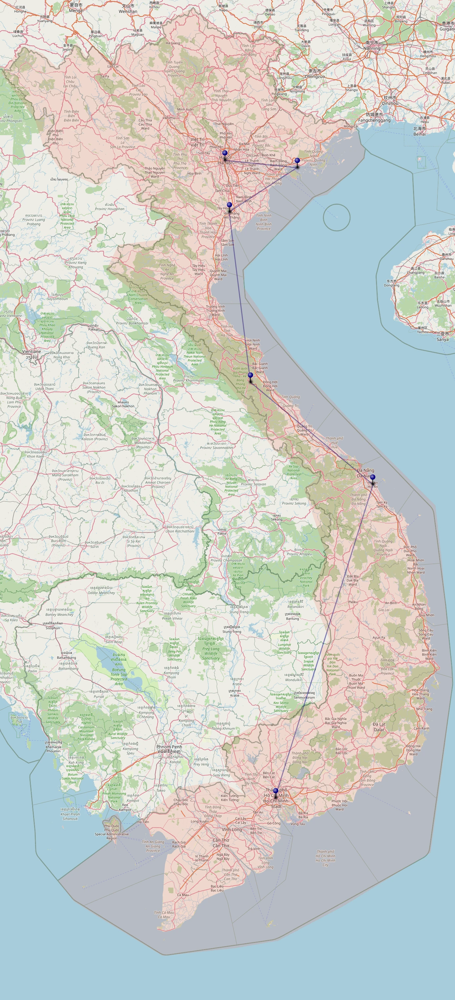

Hà Nội
Die quirlige Hauptstadt mit Tempeln, Gassen und Kaffee-Momenten.
Route durch Vietnam
Diese Website dokumentiert die Reise der studentischen Exkursionsgruppe „CASGoesVietnam2026“ in einzelnen Kapiteln. Große Bilder und eine klare, ruhige Struktur lenken den Fokus ganz auf die Schönheit der Orte und das Erleben der selbst eingefangenen Momente.

Die quirlige Hauptstadt mit Tempeln, Gassen und Kaffee-Momenten.
Karstfelsen, Wasser, Licht und unvergessliche Momente.
Reisfelder, Flussläufe und der Zauber des ländlichen Nordvietnams.
Höhlen, Dschungel und stille Natur.
Historische Altstadt und leuchtende Laternen treffen auf modernes Küstenflair.
Das pulsierende Herz des Südens voller Dynamik und Farben.